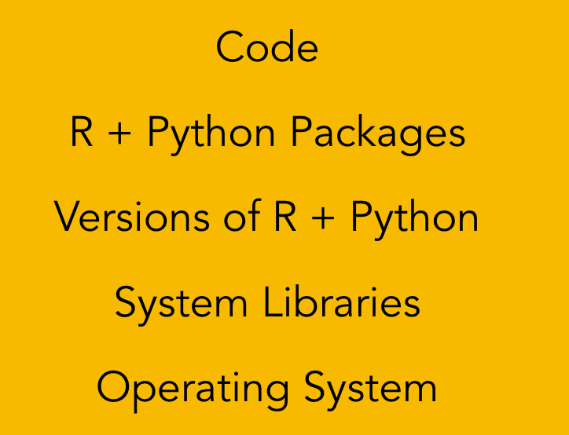
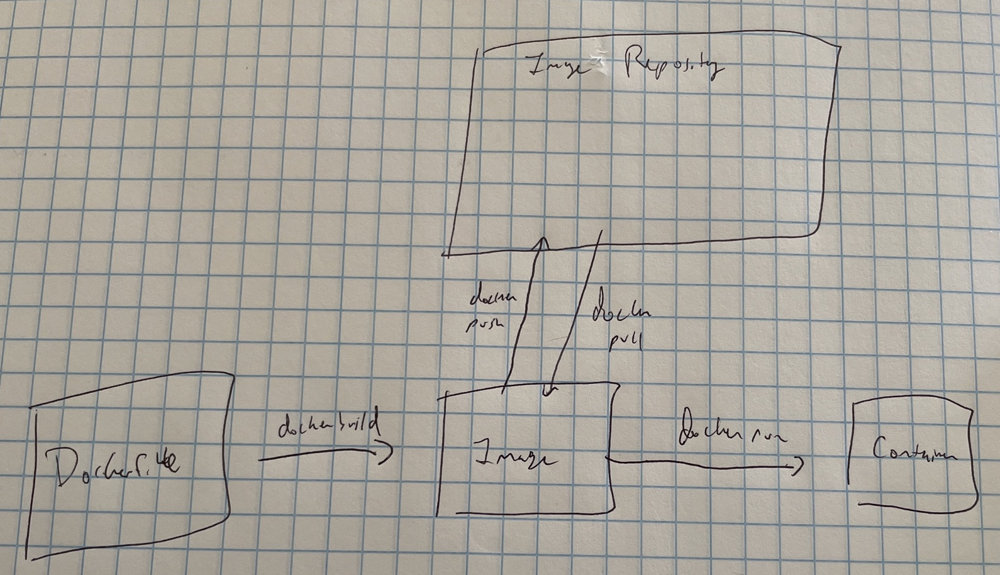

4 Docker for Data Science
If you’re in the data science world, especially the world of “production data science”, you’ve probably heard of Docker – but you might not really be sure what it is or whether you need it.
This chapter is designed to clarify what Docker is and how it might help you. We’ll start with a general intro to Docker, proceed with some discussion of data science-relevant Docker workflows, and then dive in to a hands-on lab that will be just the thing to get you started if you’re not sure where to go.
4.1 What is Docker anyway?
Here’s an unhelpful definition – Docker is an open-source containerization platform.
To get away from unhelpful definitions, let’s talk a little about why you might want to use Docker.
Let’s say you’ve got a Shiny app you want to share with your colleagues. Before you can share that app, you’ve got to make sure that your colleagues have the right set of R packages, a compatible version of R, and a compatible operating system. In contrast to the difficulty of making sure all those things match, a container allows you to simply share the entire container and go!
Let’s say you’re developing an app. If you read the chapter on reproducibility, you understand that there are layers of dependencies you’re accumulating, including your code, the R and Python packages your code needs, the versions of the langauges themselves, and right down to the operating system.

It would be very useful to be able to take all these things, package them up, and ship them off somewhere – maybe you want to share all of this with a collaborator or ship your app to production and be pretty confident the app will run without a lot of work to re-create the environment.
In the last 5-10 years, containers have become the primary way people package up their apps with their dependencies to share them like this.
When you pull and load this image, you’ll find it takes a long time. The real power of Docker becomes apparent the second time you start this image. Once you’ve got the image downloaded locally, the container comes alive in a fraction of a second. This is in stark contrast to other sorts of local segregated environments that allow you to have a computer in a computer like VirtualBox – there are real benefits to having a full reproduction of another computer, rather than just a hypervisor-based container – but they also take seconds or minutes to stand up.
Relative to earlier technologies like virtual machines, containers are much more lightweight. In fact, Docker containers can start up in a fraction of a second and be ready to go. This means that putting your app in a container adds very little overhead in terms of performance, which is great!
IT/Admins tend to love Docker because apps show up pre-packaged, because Docker makes it really easy to scale up apps in a “microservices architecture”, and because you can tightly control the resources available to a Docker container, making it more secure and easier to ensure system stability.
To a first approximation, discussions about containers are discussions about Docker. There are other containers that exist, and some people use them for particular use cases. But for general purpose, if you’re using containers, they’re Docker conatiners.
The key word in that sentence is containerization. For most purposes these days, Docker and containers are synonymous since Docker was the first containerization platform to hit the mainstream, and is still by far the most popular.1
[Graphic: Docker on underlying host]
Let’s talk through a simple example to make this clearer.
In the reproducibility chapter, you learned about the layers of reproducibility for an app. Docker takes care of everything at or above the operating system level. It doesn’t completely negate the need for other sorts of IT tooling, because you still have to provision the physical hardware somehow, but it does make everything much more self-contained.
You can think of containers in two different ways – as encapsulations of a development environment, or as a mobile encapsulation of an app that can be deployed. In fact, the same container can be this for different people. Assume for a second, you’re an IT/Admin responsibile for making JupyterHub available to your organization. You can pull and run the JupyterHub Docker image and have an initial installation of JupyterHub up and running in seconds. From the Data Scientist’s perspective, this is now a development environment for them.
docker run --rm -p 8787:8787 -e PASSWORD=rs_pass rocker/rstudioThe last few years have seen the rise of containerization as a strategy for managing applications in enterprise software deployments. The main benefit of containerization is it allows you to create a container that includes both an application you want to run, as well as all its dependencies.
4.1.1 Container Lifecycle
One of the hardest parts of understanding Docker is the language around how you are interacting with Docker and what exactly it is you’ve got.
I’m glossing over the many capabilities of Docker and the things you can do to discuss Docker in the way I generally find most useful to Data Scientists.

A container starts its life as a Dockerfile. A Dockerfile is a set of instructions for how to build a container. For example, here’s the Dockerfile for the example above:
[TODO: DOCKERFILE + EXPLANATION]
Once you’ve got a working Dockerfile, you build it into an image – the image is an immutable point-in-time snapshot of the container. In general, the image is going to be the thing that you share with other people, as it’s the version of the container that’s compiled and ready to go.
Docker images can be shared directly like any other file, or via pushing and pulling to a Docker image registry. You can create and use private registries or the public Docker Hub. It’s worth noting that relativey few people actually run their own container registry. Many take advantge of cloud offerings for container registries as a service offerings. The big 3’s are Amazon’s Elastic Container Registry (ECR), Azure Container Registry, and Google Container Registry.
It is possible to interactively build a container as you go and create an image, but for the purposes of reproducibility, it’s generally preferable to build the image from a Dockerfile, and adjust the Dockerfile if you need to adjust the image.
4.2 Docker for the Data Scientist
If you’ve read this far into the chapter, you might be about ready to go put every project you’ve got into a docker container, ask your colleagues to do the same, and plan to share Shiny apps by making everyone download Docker Desktop and give them a docker run command.
Slow down.
Docker is a great solution for some problems, but it’s not a perfect fit for many of the issues data scientists face, and there are better tools for many of them. In particular, one pattern that feels appealing, but I would describe as an anti-pattern is the temptation to just take a Docker container, start installing packages, and then save the image. Even in some cases, you’ll see a Dockerfile that looks like
install.packages("shiny")
install.packages("dplyr")
...Building a Dockerfile like this into an image provides a reasonable level of reproducibility, but it still is quite fragile if you ever find reason to rebuild this Dockerfile. For that reason, the best move is to combine the ability of R and Python-specific libraries for capturing package state – like renv and virtualenv with Docker’s ability to save the state of the underlying operating system and any system packages you’ve got.
There are a few particularities of Docker containers that can make operating inside them a little difficult. The first is the tradeoff of Docker’s strength – a container only gets access to the resources it has specifically been allowed to access. This is a great feature for security and process isolation, but it means you may run into some issues with networking and access to system resources, like your files.
You’ll have to develop a reasonably good mental model of the relationship of the Docker container to the rest of your machine in order to be able to develop effectively. For many data scientists, this isn’t a primary concern of theirs.
For that reason, it’s often preferable to skip Docker altogether and develop on a centralized server environment like RStudio Server or JupyterHub. Then, when it comes time to deploy apps, you can use a platform specifically for deploying data science content, like RStudio Connect, or build your app into a Docker container specifically for deployment.
4.3 Hands on with Docker
In this section, we’re going to spend a few minutes learning how to get hands-on with Docker. This is not designed to be a full introduction to Docker, but just a quick overview of the commands you’ll probably need to know to get started. There are many great resources out there for really learning Docker. I’d suggest picking up one of them rather than relying on this book to learn everything you need to know about Docker.
There are at least three different cases where you might want to run Docker:
- You are running a batch (non-interactive) job in R or Python. By packaging it up with all of its dependencies, you make it really easy to run quickly.
- You are running a service – like an app or api – out of the container.
- You are running a development environment like RStudio or JupyterHub out of the container and find the an easy way to control the environment.
We’ll run through an example of how to do all 3, as they’ll help us build up an understanding of how to do everything we’d need to with Docker.
4.3.1 Getting prepped
Know how to open a terminal
4.3.2 Running an app from Docker
Running an interactive app or api is one of the most common use cases for Docker. In this case, we’re going to start there because it’s the simplest from a Docker perspective.
I’ve already created a container with Shiny Server and a running app in it, so all you’ve got to do is pull it down to run locally.
To run a Docker container, you just do docker run <image name>, however you’ll usually specify one or more options to the docker run command to make it work the way you want.
4.3.2.1 Port Publishing
In the case of a running app, we’ll want to “publish” the port where Shiny Server runs inside the container to the host so that you can actually get there in your browser. By default Shiny Server runs on port 3838, and we’ll use that same port outside by adding a -p 3838:3838 to our docker run command.
I always forget the order, so this is as much a note for me as it is for you!
In this command, we’re just mapping 3838 inside the container to 3838 on the host (your laptop). But sometimes, you’ll want to map to a different port, and then you have to remember the order.
The syntax is <host port>:<container port>. So if we did 8383:3838, would make whatever is available at 3838 inside the container accessible at 8383 on your laptop at http://localhost:8383.
For more on ports, see the section
We’re also going to add a --rm so the container cleans up nicely after itself.
The --rm flag is something you’ll usually want if you’re just messing around – and you’ll probably never want in production. Cleanup after the container closes includes deleting any stored logs.
You’re definitely going to want those stored logs if you have a failure when you’re in production!
Ok, so let’s try it. Open a terminal and type
docker run -rm -p 3838:3838 alexkgold/interactiveIf you’ve never run this before, Docker will pull down the container and launch it. docker pull. Now, go to http://localhost:3838, and you should see the Old Faithful shiny app.
<TODO - change this app to be something more book-relevant>
That’s great! Now let’s close it. Uh oh…unless you’re already pretty terminal-savvy, you’re stuck. You could close the terminal window, but you’re just locked watching logs. If you do need to get out, you can just send an interrupt to the terminal (Ctrl + c).
4.3.2.2 Detaching a container
Generally, when you’re running a process like this, you’ll want to run it in “detached” mode, so it doesn’t take over a terminal window. That’s quite easy just by adding a -d to your run command.
docker run -d --rm -p 3838:3838 alexkgold/interactiveLike before, we can go to http://localhost:3838 to see the running Shiny app. Now when we go to close it down, we have a different problem…where did the app go?
We can find all of our running containers using the docker ps (short for process status) command. For me, that looks something like:
$ docker ps
CONTAINER ID IMAGE COMMAND CREATED STATUS PORTS NAMES
d67d19d488b6 alexkgold/interactive "/init" 6 seconds ago Up 4 seconds 0.0.0.0:3838->3838/tcp, :::3838->3838/tcp pedantic_williamsThis gives me all the information I need about the running container, including the image, how long it has existed, and any port mapping that I’m doing.
When it comes time to close the container, I can close it with the docker kill command. I can use either the id or the name. If you use the ID, Docker does automatic matching, so you usually only need the first 3-4 characters. In this case docker kill d67 was sufficient. docker kill my-shiny.
--name flag. So if I added --name my-shiny when I started, I could kill the container with4.3.3 Running a batch job
For this first task, let’s say we’ve got a Jupyter notebook that we know we’ll want to re-render in the future. For that purpose, it might be useful to bake it into a Docker container, so we can re-run it at will. This container is using Quarto to render my Jupyter Notebook into an html document I could serve on a webpage or share with others.
<TODO - change this book to be something more book-relevant, perhaps w/ input data, perhaps PDF>
Before we go any further, let’s just try out running this job with
docker run alexkgold/batchIt may take a minute to download the container, as it’s over 600Mb. But once you’ve got it, it should take just a few seconds to run. Note that because there isn’t an ongoing running service, this container just shuts down when it has done its business.
But wait…where’d my document go?
Remember – containers are completely ephemeral. As they say (they do not) – what happens in the container stays in the container. This means that when my document is rendered inside the container, it gets deleted when the container ends its job.
But that’s not what I wanted – I wanted to get the output back out of the container.
4.3.3.1 Mounting a volume
The solution – making data outside the container available to the container and vice-versa – is accomplished by mounting a volume into the container. This an essential concept to understand when working with containers. Because containers are so ephemeral, volumes are the way to persist anything that you want to outlast the lifecycle of the container.
TODO - diagram of a volume
The way to think of this is that the file directories inside the container are completely independent from the file directories on the host. By mounting a volume, you can make a directory inside the container correspond to a volume outside the container.
This is accomplished with the -v flag on the docker run command. Like with mounting a port, the syntax is -v <directory outside container>:<directory inside container>.
This time, mount your current directory as /project-out inside the container.
$ docker run -v $(pwd):/project-out alexkgold/batchThis time, when the container finishes, you should see a file named hello.html in your working directory. If you right click it to open it in your browser, you should see a rendered Jupyter Notebook!
4.3.4 Using Dockerfiles
So far, we’ve just been working on running containers based on images I’ve already prepared for you. Let’s look at how those images got created so you can try building your own.
A Dockerfile is just a set of instructions that you use to build a Docker image. If you have a pretty good idea how to accomplish something on a running machine, you shouldn’t have too much trouble building a Dockerfile to do the same as long as you remember two things:
- Docker containers only have access to exactly the resources you provide to them. That means that they won’t have access to libraries or programs unless you give them access, and you also won’t have access to files from your computer unless you make them available.
- You have to keep in mind what you want to have happen at build time and how that’s different fro what should happen at run time. So, for example, I want to get all the pieces in place – my Python environment, the notebook, etc at build time – and then at run time I want the notebook to be rendered and output.
There are many different commands you can use inside a Dockerfile, but with just 4, you’ll be able to build most images you might need.
FROM– every container starts from a base image. In some cases, like in my Jupyter example, you might start with a bare bones container that’s just the operating system (ubuntu:20.04). In other cases, like in myshinyexample, you might start with a container that’s almost there, and all you need to do is to copy in a file or two.RUN– run any command as if you were sitting at the command line inside the container. Just remember, if you’re starting from a very basic container, you may need to make a command available before you can run it (likewgetin my container below).COPY– copy a file from the host filesystem into the container. Note that the working directory for your Dockerfile will be whatever your working directory is when you run your build command.CMD- This is the command the Docker container will run when you run it withdocker run. This is the thing you actually want to happen when you run your container.
Now that you have that background, hopefully this Dockerfile makes some sense to you. If you don’t know what some of the individual commands are, consider googling them.
# syntax=docker/dockerfile:1
FROM ubuntu:20.04
# Copy external files
RUN mkdir -p /project/out/
COPY ./requirements.txt /project/
COPY ./hello.ipynb /project/
# Install system packages
RUN apt-get update && apt-get install -y \
wget python3 python3-pip
# Install quarto CLI + clean up
RUN wget https://github.com/quarto-dev/quarto-cli/releases/download/v0.9.83/quarto-0.9.83-linux-amd64.deb
RUN dpkg -i ./quarto-0.9.83-linux-amd64.deb
RUN rm -f ./quarto-0.9.83-linux-amd64.deb
# Install Python requirements
RUN pip3 install -r /project/requirements.txt
# Render notebook
CMD cd /project && \
quarto render ./hello.ipynb && \
# Move output to correct directory
# Needed because quarto requires relative paths in --output-dir:
# https://github.com/quarto-dev/quarto-cli/issues/362
rm -rf /project-out/hello_files/ && \
mkdir -p /project-out/hello_files && \
mv ./hello_files/* /project-out/hello_files/ && \
mv ./hello.html /project-out/Once you’ve created your Dockerfile, you build it into an image using docker build -t <image name> and then you can push that to DockerHub or another registry using docker push.
4.3.5 Docker Cheatsheet
WORK IN PROGRESS
4.3.5.1 Docker Commands
docker run
-d– run in “detached mode” – this is often a good idea, as it puts the docker container into the background of your terminal, so it doesn’t stay blocking anything else you’d want to do.-p– “publish” ports from inside the container to the host-v– mount a volume into the container-n– give your container a name
docker ps lists all of your running containers. Because a container can just run quietly in the background, it’s easy to lose track of them, and docker ps will give you the list. It’s also worth remarking that you don’t need to be a command-line hero – you can open the docker desktop dashboard to see these things.
docker exec -it <container id>
docker kill
Docker images can be quite large. If you’re doing a lot of different things on Docker, you may quickly find yourself using A LOT of storage space.
You can see all the images you’ve got downloaded with docker ps -a (-a is short for all) and you can delete them with docker container rm <container id>.
Don’t be precious about your images! You’re always just a docker pull away from getting them back.
If you want to delete all the images you’ve ever downloaded, you can do that with docker container rm -f $(docker container ls -aq).
4.4 Exercises
- Put a shiny app in a container, run it on your desktop.
- Put that container into a container registry.
- Use a local K8S distribution to run several instances of that container.
- Redo the Jupyter example but instead of baking the notebook into the conatiner, provide the notebook at runtime.
As much as any esoteric code-development and deployment tool can be said to “hit the mainstream”.↩︎